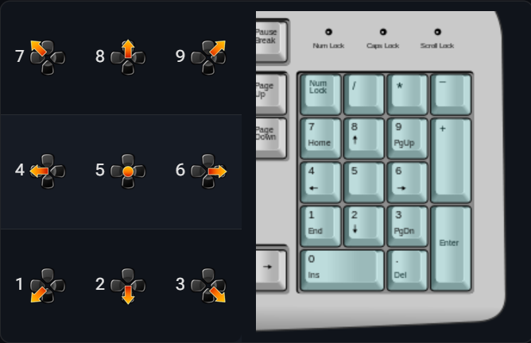

在开始之前
本节展示在连段指南中，你可能会遇到的各种标识以及其代表的意义。
数字小键盘记法
数字小键盘记法为格斗游戏的操作输入提供了一套标准化体系。它将方向键输入映射到计算器或计算机的数字小键盘上，且始终假设玩家角色面向右侧。

其余标识
| 标识 |
意义 |
| > |
取消前一个动作进入下一个动作
例如普通技 > 必杀技(2LP > 623HP)
|
| ~ |
取消前一个动作进入其追加派生
例如卢克的TC(5LP~MP~HP)或是OD升龙的派生(623PP~PP)
|
| , |
连接前一个动作进入下一个动作。这不是取消，而是帧数能够接上。
例如卢克的2MP,5LK目押或是肯的2LP,5LK目押。
|
| JX |
跳跃动作；对于直跳动作，使用8JX。
例如DJ的J2LK或是隆的J214K
|
| X/Y |
表示你可以使用两种动作中的某一种。
如2LP/2LK。
|
| [X] |
按住按键输入。
例如卢克的214[LP]代表蓄力214LP
|
| dl. |
延迟按键输入。
例如肯的236MK~dl.6HK,623HP。
|
| AA |
对空，即命中空中的敌人。
这可能会造成与地面命中不同的受击状态，可以延展连段。
|
| Y xN{Y} xN |
重复某一片段N次。
例如 2LP x3 或者 {2HP > DRC} x2。
|
| Y > DRC |
斗气冲刺取消，消耗三格斗气。
例如 5HP > DRC
|
| DR~Y |
斗气冲刺接入动作Y(取消冲刺帧接入后续的攻击)。
例如 5HP > DRC
|
基础连段
2LP/2LK > 2LP > 2LP > 214LP
基本的轻攻击三点确认。
卢克的2LP不能连打取消至5LP，这一点需要注意。
Corner 2LP/2LK > 2LP > 2LP > 214LP,623LP
基本轻攻击三点确认的板边版本：在新赛季更新之后，板边214LP可以接上623LP以提升火力。
5LP~MP~HP > 214HP
卢克5LPTC的连段。
2MP > 214MP
中攻击确认。必须要说明的是：214MP打防是确反的，因此这不是一个实用的复合。
2MP,5LK > 214LP
2MP的近距离命中确认，本质上是一个两点确认：5LK打防安全，因此确认命中再输入214LP。
不过 2MP > 5LK 是一个目押，需要稍微练习练习。
Corner 2MP,5LK > 214LP,623LP
上一个连段的板边版本。
5HP > 214HP
基本的5HP命中确认。
未蓄力的214HP打防-4，通常是会被确反的。但如果距离把控得当，这是一个相当安全的招式。
Corner 5HP > 214[LP],214LP,623LP
基本的5HP板边连段，无需完美蓄力。
Not-Cornered ... > 2HP > 214[MP],214[LP],214MP
新版本更新之后，2HP可以直接接蓄满的214MP。
如果你实在不会完美蓄力，就这样接民工三拳。
Close to Corner ... > 2HP > (pf.)214[MP],623LP
如果离板边过近，就无法接入(pf.)214[LP]，使用升龙替代。
核心连段
 银狼的连段技巧
银狼的连段技巧
卢克连段的核心在于熟练掌握他的 完美蓄力(pf.214XP) 的时机。
刚上手的时候，可以尝试观察蓄力时卢克手臂上的粒子效果，在闪光的那一刻松开按键。
随着不断地练习，你最终会形成肌肉记忆。
Not-Cornered ... > 2HP > pf.214[MP],pf.214[LP],214HP
卢克最基本的完美蓄力路线，通常被称为“民工三连”。
如果你不知道该怎么连，只要能命中2HP就可以打这一套，务必熟练掌握。